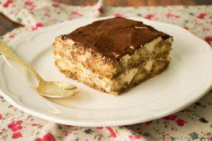

Strawberry Shortcake

Authentic Italian Tiramisu Recipe
In Italian homes, tiramisu is a simple, elegant dessert that relies entirely on the quality of its ingredients and the balance of its flavors.
Ingredients
- 300 g Savoiardi ladyfingers
- 500 g cold mascarpone cheese
- 4 medium eggs
- 100 g granulated sugar
- 300 ml strong espresso coffee, cooled
- 2 tablespoons Marsala Wine
- Unsweetened cocoa powder
Steps
- Prepare the coffee and let it cool completely.
- Separate the egg whites from the yolks. Place them in two different bowls.
- In a separate bowl, beat the egg yolks with the sugar for 3 to 5 minutes, until the mixture becomes pale, smooth and slightly thickened.
- Add the mascarpone to the whipped yolks. Gently mix until smooth and fully incorporated. The mascarpone should be cold, thick and creamy, not watery.
- Fold the whipped egg whites into the mascarpone mixture. Use a spatula or wooden spoon and mix gently from the bottom up, so you do not deflate the cream. Continue until smooth and airy.
- Quickly dip each ladyfinger into the cooled coffee for 1 to 2 seconds. Do not soak them too long, or the tiramisu will become overly soft and watery.
- Arrange the soaked ladyfingers in a single layer in your serving dish.
- Add a second layer of dipped ladyfingers, then cover with the remaining mascarpone cream. Smooth the surface.
- Dust generously with unsweetened cocoa powder.
Home